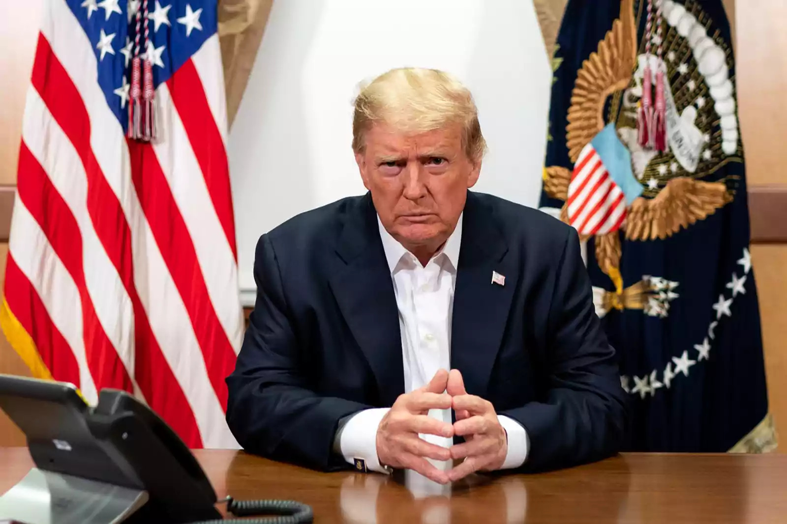

Estados Unidos lanzó una ofensiva militar y Trump afirmó que Nicolás Maduro fue capturado y sacado de Venezuela
Donald Trump afirmó que Estados Unidos llevó adelante una ofensiva militar en Venezuela y aseguró que Nicolás Maduro fue capturado y sacado del país. El gobierno venezolano rechazó la versión y denunció una agresión contra la soberanía nacional, mientras la situación mantiene en alerta a la comunidad internacional.

El presidente de Estados Unidos, Donald Trump, anunció que su país llevó adelante una ofensiva militar de gran escala sobre Venezuela y aseguró que el mandatario venezolano, Nicolás Maduro, fue capturado junto a su esposa, Cilia Flores, y trasladado fuera del territorio venezolano.
El anuncio fue realizado por Trump a través de sus redes sociales, donde afirmó que la operación se desarrolló con éxito y formó parte de una acción destinada a desarticular al actual gobierno venezolano.
Durante la madrugada se registraron explosiones en Caracas y en otras regiones del país, lo que generó una fuerte conmoción interna y un clima de máxima tensión. Distintos reportes indican interrupciones en el suministro eléctrico y movimientos de fuerzas de seguridad en zonas estratégicas.
La situación genera un fuerte impacto internacional y mantiene en alerta a la comunidad global, mientras se aguardan confirmaciones oficiales y posibles pronunciamientos de otros gobiernos y organismos internacionales. Los acontecimientos continúan en desarrollo y podrían modificar de manera significativa el escenario político de la región.